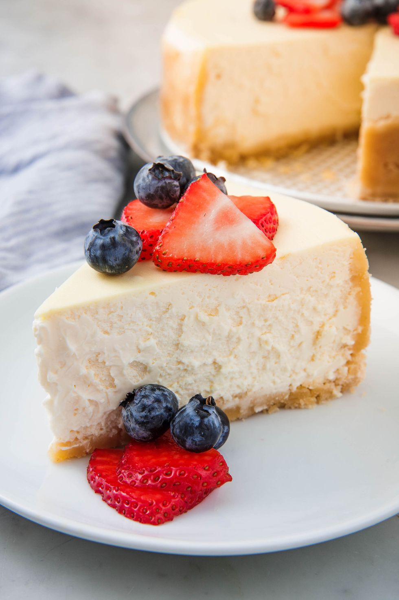

Home
Keto Cheesecake Recipe!

Ingredients
- 1/2 cup almond flour
- 1/2 coconut flour
- 1/4 shredded coconut
- 1/2 cup (1 stick) butter
- 3 blocks of cream cheese
- 16 oz sour cream
- 1tbsp stevia
- 2tsp pure vanilla
- 3 large eggs
- sliced strawberries
Steps
- Preheat oven to 300°. Make the crust: Grease an 8" or 9" springform pan, and cover the bottom and edges with foil. In a medium bowl, mix together the flours, coconut, and butter. Press the crust into the bottom and a little up the sides of the prepared pan. Place the pan in the fridge while you make the filling.
- Make the filling: In a large bowl, beat the cream cheese and sour cream together, then beat in the stevia and vanilla. Add the eggs one at a time, mixing after each addition. Spread the filling evenly over the crust.
- Place cheesecake in a deep roasting pan and set on middle rack of oven. Carefully pour enough boiling water into roasting pan to come halfway up sides of springform pan. Bake for 1 hour to 1 hour 20 minutes, until it only slightly jiggles in the center. Turn oven off, but leave the cake in the oven with the door slightly ajar to cool slowly for an hour.
- Remove pan from water bath and take off foil, then let chill in the fridge for at least five hours or overnight. Slice and garnish with strawberries.
Back to Top
Back to Home